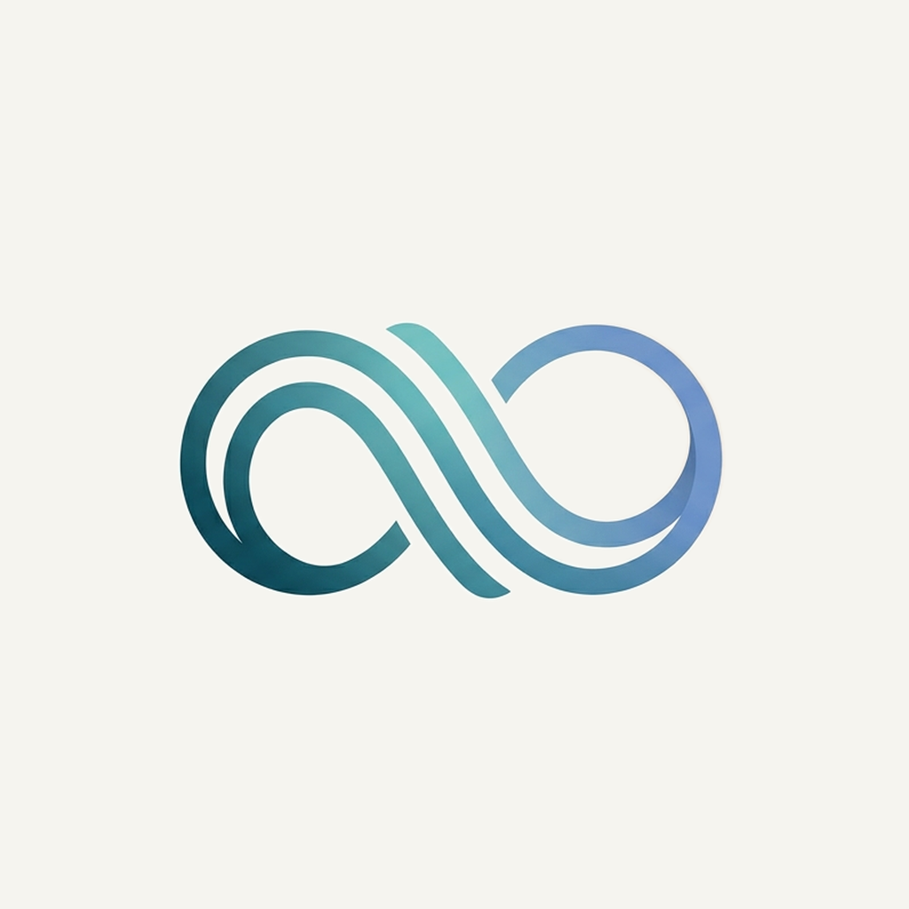

Everyone’s free.
Nobody makes the plan.
ALINE
Events
Goals
what’s happening this weekend?
Two things on this weekend.
Jazz night
Fri 20:30 · Kino Šiška
10 € · ~12 min drive
I’m going
✓ Going
Farmers market
Sat 08:00 · Main square
free
I’m going
MY WEEK
Thu
Fri
Sat
Strength training
18:00
Jazz night
20:30
↑
Ask like you’d ask a friend.
It comes back with
real plans
.
And
moves what can move
.

ALINE
Your agent makes it happen.